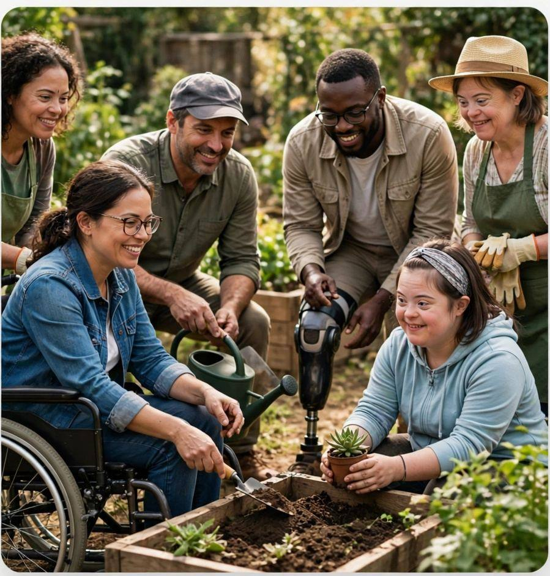

🔠 Tamanho do texto
Use os botões A-, A e A+ no topo da página. Sua escolha fica salva para a próxima visita.
Início › Acessibilidade
Medidas de inclusão para pessoas com deficiência, no site e no projeto.
Seguimos as recomendações das Diretrizes de Acessibilidade para Conteúdo Web (WCAG 2.2), nível AA.
Use os botões A-, A e A+ no topo da página. Sua escolha fica salva para a próxima visita.
O botão "Alto contraste" troca as cores para fundo preto e texto branco e amarelo. A preferência também fica salva.
Todo o site funciona só com o teclado. O link "Pular para o conteúdo" aparece ao apertar Tab.
Imagens com texto alternativo, títulos em ordem, formulário com rótulos e mensagens de erro lidas pelo leitor de tela.
O vídeo tem todo o conteúdo em texto na tela e uma transcrição completa na página de Mídia.
O layout se adapta a celular, tablet e computador, sem perder conteúdo.
| Tecla | O que faz |
|---|---|
| Tab | Vai para o próximo link, botão ou campo |
| Shift + Tab | Volta para o item anterior |
| Enter | Abre um link ou aperta um botão |
| Espaço | Marca uma caixa de seleção ou aperta um botão |
| Esc | Fecha a imagem ampliada da galeria e o menu no celular |
| Setas ← → | Trocam o slide do carrossel quando ele está em foco |

Conte para a gente o que dificultou seu acesso. Vamos corrigir.
Relatar um problema de acessibilidade